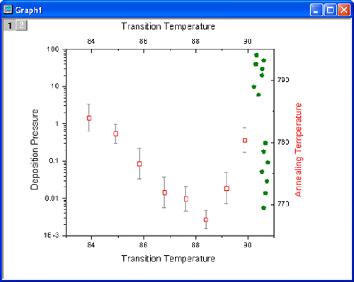
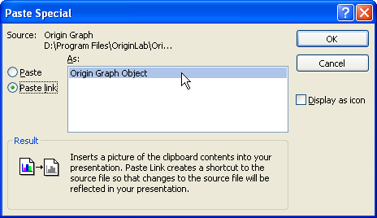
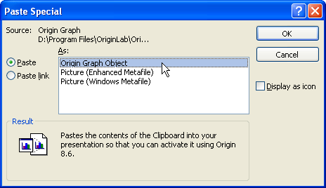
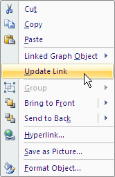
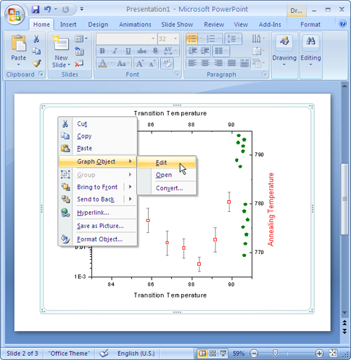
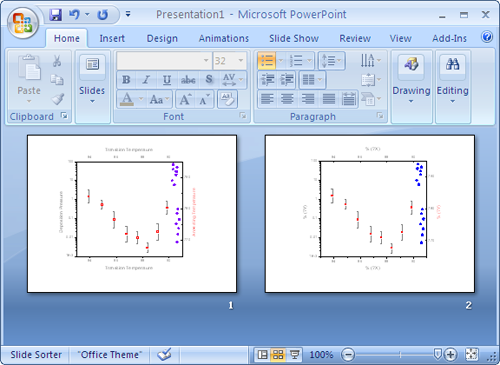

Einfügen oder Einbetten von Diagrammen in andere
Anwendungen
Zusammenfassung
Es besteht die Möglichkeit, Origin-Diagramme in andere Anwendungen (z.B.
Microsoft® PowerPoint/Excel/Word) einzufügen, entweder durch Objektverknüpfung
oder -einbettung. Sowohl verknüpfte als auch eingebettete Diagramme können
später mit Origin bearbeitet werden.
Der Unterschied ist, dass ein eingebettetes Diagramm in der Zieldatei
enthalten ist und ein verknüpftes Diagramm nicht. Ein verknüpftes Diagramm
kann dynamisch aktualisiert werden, wenn das Quelldiagramm sich ändert.
Was Sie lernen werden
Dieses Tutorial zeigt Ihnen, wie Sie:
- ein Origin-Diagramm in andere Anwendungen als verknüpfte/eingebettete
Diagramme einfügen.
- verknüpfte/eingebettete Diagramme nach dem Einfügen in andere Anwendungen
bearbeiten.
Schritte
-
Starten Sie Origin und öffnen Sie das Projekt OffsetY.opj aus dem <Origin-Programmverzeichnis>\Samples\Graphing\.
Dieses Projekt enthält ein Diagramm (Graph 1).
-

- Ist ein Diagrammfenster aktiv, wählen Sie Bearbeiten: Seite
kopieren.
- Wechseln Sie zu Microsoft® PowerPoint 2007 und erstellen Sie zwei
neue Folien.
- Gehen Sie zur ersten Folie, klicken Sie auf die Schaltfläche Einfügen
und wählen Sie im Ausklappmenü Inhalte einfügen.
-
Wählen Sie im Dialogfeld Inhalte einfügen die Option Link
einfügen und wählen Sie dann Origin-Diagrammobjekt in der Liste
Einfügen als. Klicken Sie auf OK , um das Dialogfeld zu schließen.
In der ersten Folie wird das Diagramm als ein verknüpftes Objekt eingefügt.
-

- Wechseln Sie zur zweiten Folie, öffnen Sie das Dialogfeld Inhalte
einfügen erneut wie im vorherigen Schritt.
-
Dieses Mal wählen Sie jedoch Einfügen und dann die Option Origin-Diagrammobjekt
in der Liste Einfügen als. Klicken Sie auf OK , um das Dialogfeld
zu schließen. In der zweiten Folie ist das Diagramm als ein eingebettetes
Objekt eingefügt.
- 
- Gehen Sie zurück zur Datei OffsetY.opj in Origin, klicken Sie doppelt
auf das olivfarbene Punktdiagramm in Graph 1, rufen Sie das Dialogfeld
Details Zeichnung auf, ändern Sie die Symbolfarbe in Violett
und klicken Sie auf OK, um das Dialogfeld zu schließen.
-
Wechseln Sie jetzt zu PowerPoint zur ersten Folie, klicken Sie mit
der rechten Maustaste auf das verknüpfte Diagramm und wählen Sie Link
aktualisieren im Ausklappmenü. Die Farbe des Punktdiagramms in dieser
Grafik ändert sich und wird violett.
- 
-
Wechseln Sie zur zweiten Folie, klicken Sie mit der rechten Maustaste
auf das eingebettete Diagramm und wählen Sie Diagrammobjekt: Bearbeiten,
um das Diagramm in Origin erneut zu öffnen. Beachten Sie, dass der Diagrammname
Graph in Presentation 1 lautet, was darauf hinweist, dass das Diagramm
in der Zieldatei abgelegt ist.
-

-
Ändern Sie die Farbe des Punktdiagramms in Graph in Presentation
1, wie zuvor geschehen, von oliv in blau und schließen Sie Origin.
Beachten Sie, dass das verknüpfte Diagramm in Folie 1 und das eingebettete
Diagramm in Folie 2 jetzt verschieden aussehen.
-
